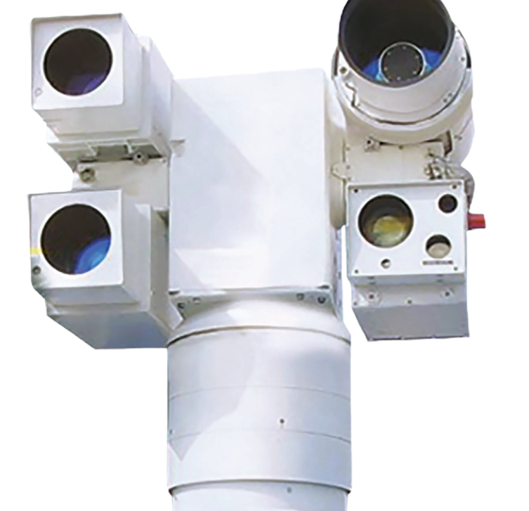
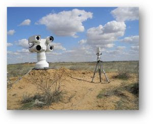

Electron-optical observation
Jura-Opticum
-
Matrix format1280 × 1024
-
Frame rate, Hz30...500
-
Focal length40-500
-
Focal length, mm1000 (1600)

The system can generate up to six tracks and, accordingly, simultaneously monitor up to 6 objects in the field of view of the lens.
Operating modes
- Automatic mode support
- Semi-automatic mode support
- Manual mode support

Mobility
The JURA-OPTICUM system is designed for mobile applications and provides for the deployment, relocation and measurement directly from the chassis of off-road vehicles.
Detected objects
Aircraft, propellers on takeoff, landing and in flight; land stationary facilities and vehicles, sea and river vessels in the designated surveillance sector.